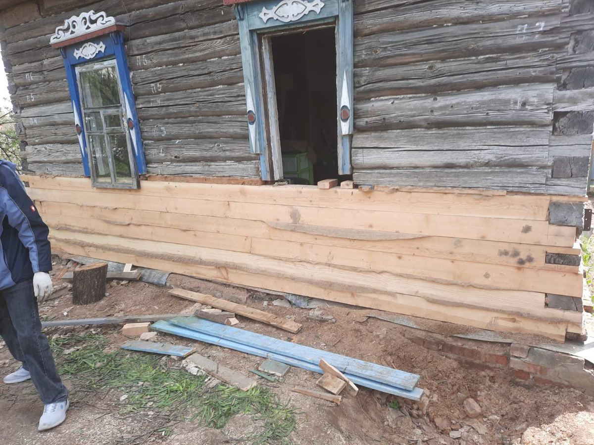
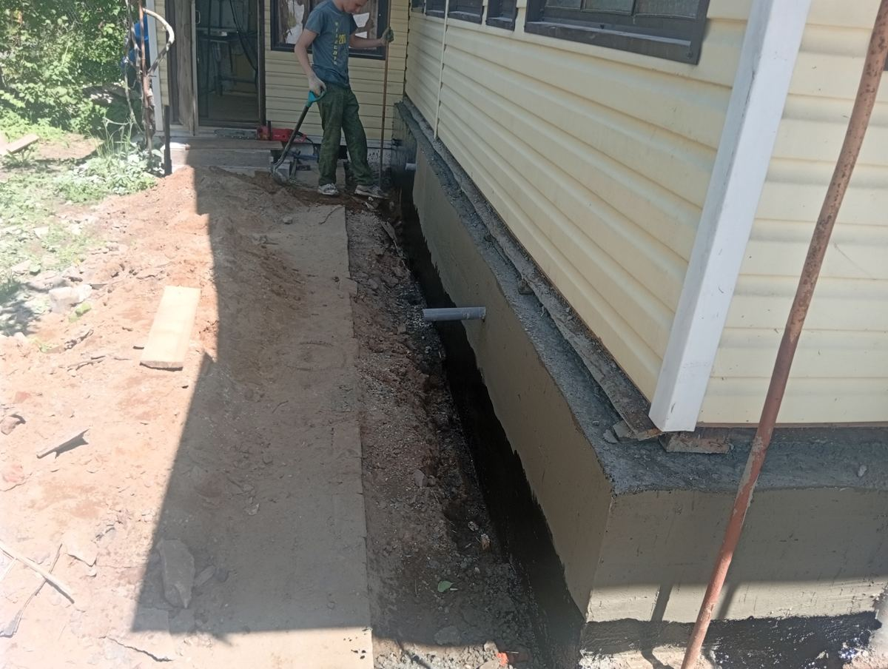
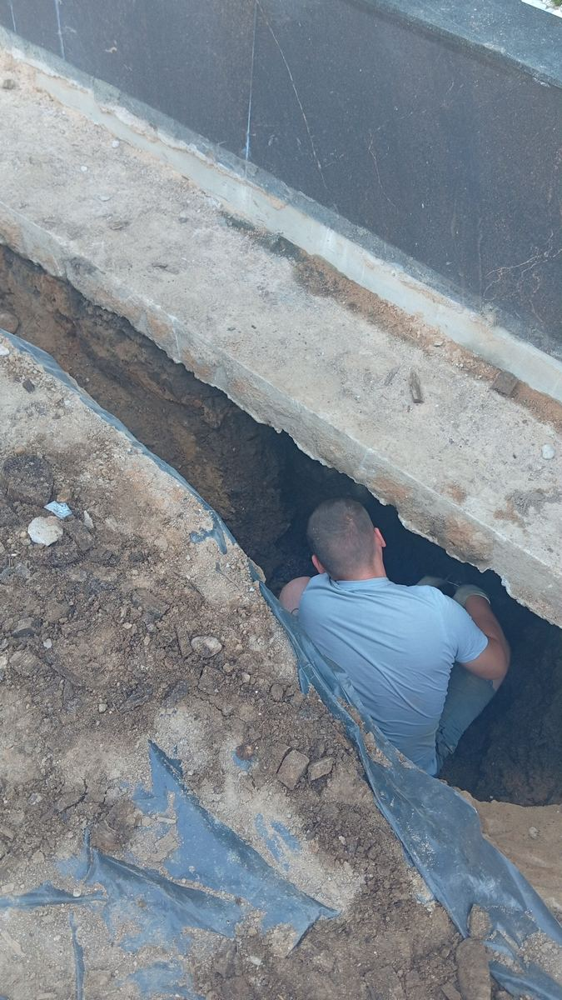
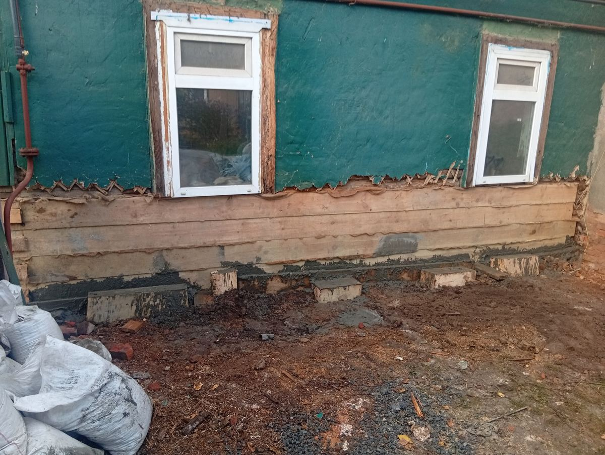

Замена венцов
Вырезаем гниль, ставим антисептированный брус или бревно, кладём двойную гидроизоляцию.
от 65 руб/м.пог.РассчитатьПоднимем сруб на домкратах, заменим венцы, отремонтируем или зальём фундамент, починим кровлю и укрепим грунт под основанием. Гомель и вся область. Гарантия до 5 лет.

Нижняя часть дома работает как единая система: грунт, фундамент, венцы, кровля. Берём на себя любой этап или весь комплекс.
Вырезаем гниль, ставим антисептированный брус или бревно, кладём двойную гидроизоляцию.
от 65 руб/м.пог.Рассчитать
Усиливаем ленту, восстанавливаем разрушенные участки, делаем гидроизоляцию и отмостку.
от 90 руб/м.пог.Рассчитать
Заливаем новое основание под дом: опалубка, арматура, бетон. Дом при этом стоит на опорах.
от 240 руб/м.пог.Рассчитать
Подводим основание глубже, уплотняем и заменяем слабый грунт, останавливаем просадку.
расчёт после осмотраРассчитать
Меняем стропила и обрешётку, перекрываем металлочерепицей, профнастилом или шифером, чиним свесы.
расчёт после осмотраРассчитать
Гидравлические домкраты на 20–50 тонн, подъём по 1–2 см за проход, без трещин и перекосов.
от 450 рубРассчитатьЧем раньше начать, тем меньше гнили придётся убирать и тем дешевле выйдет ремонт.

Ответьте на вопросы о доме. Сразу покажем ориентировочную цену, а мастер перезвонит и уточнит её.
Инженер приезжает бесплатно, проверяет горизонт сруба, степень гнили и фундамент. Цену фиксируем до начала работ.
Стягиваем стены стальными стяжками и усиливаем проёмы коробками, чтобы дом не повело при подъёме.
Гидравлические домкраты на 20–50 тонн поднимают дом по 1–2 см за проход. Сруб встаёт на временные опоры.
Убираем сгнившие бревна и разрушенный бетон. Мусор собираем и вывозим сами.
Усиливаем старую ленту, заливаем новый армированный пояс или меняем основание целиком.
Ставим брус из лиственницы или сосны камерной сушки с антисептиком и двойной гидроизоляцией.
Опускаем дом, сверяем горизонт лазерным уровнем, конопатим швы. Подписываем акт и даём гарантию.
Подъём дома и замену венцов лучше не делать своими силами: ошибка вызовет трещины в стенах и перекос сруба. Мы работаем по строительным нормам и отвечаем за результат.
Реальные фото с работ: от замены венцов до заливки нового фундамента.
| Демонтаж сгнившего венца | от 35 руб/м.пог. |
| Замена венца из бруса 150×150 / 200×200 | от 65 руб/м.пог. |
| Замена венца из бревна | от 80 руб/м.пог. |
| Подъём дома домкратами (за точку) | от 120 руб |
| Вывешивание дома на временные опоры | от 45 руб/м.пог. |
| Ремонт фундамента | от 90 руб/м.пог. |
| Укрепление фундамента под венцами | от 110 руб/м.пог. |
| Замена фундамента | от 240 руб/м.пог. |
| Горизонтальная гидроизоляция, 2 слоя | от 15 руб/м.пог. |
| Межвенцовый утеплитель (джут, лён) | от 10 руб/м.пог. |
| Локальный ремонт фрагмента венца | от 180 руб/шт. |
| Монтаж отливов по периметру фундамента | от 25 руб/м.пог. |
Итог зависит от размера и веса дома (печь, мансарда), числа венцов и объёма дополнительных работ. Точная цена в смете после бесплатного выезда. Информация на сайте не является публичной офертой.
Нет. Сруб поднимается на домкратах, нижние венцы меняются без разборки стен и крыши.
Перед подъёмом стены стягиваем, проёмы фиксируем, подъём идёт синхронно по 1–2 см. Риск трещин минимален.
Да. Выпиливаем гнилой участок и ставим новый брус на шканты. Это дешевле полной замены.
Нет. Нижние панели временно снимаем, после работ возвращаем на место.
Обрабатываем антисептиком глубокого проникновения в 2–3 слоя и кладём двойную гидроизоляцию между фундаментом и венцом.
В среднем 3–5 рабочих дней для стандартного дома 6×6 м. Если добавляется фундамент, срок согласуем в договоре.
Да, это обычная практика. Брус проще стыкуется с фундаментом и по несущей способности не уступает бревну того же сечения.
Вывешиваем угол, вырезаем повреждённую часть и вставляем новый «замок», повторяя рубку.
Достался дом от деда, низы совсем в труху. Думал, придётся сносить. Подняли дом за день, поставили свежий брус. Теперь стоит ровно, окна не заедают.Александр, Гомель
Дом большой, с жилой мансардой. Использовали 8 домкратов одновременно, подняли на 20 см, поменяли венцы. Ни одной трещины.Станислав, Мозырь
Пишу через год после ремонта. Дом хорошо перезимовал, нижние венцы сухие, гидроизоляция работает. Качество проверено временем.Максим, Калинковичи
Живу одна, в стройке не разбираюсь. Инженер спокойно показал, где гниль, и объяснил, что нужно менять. Сделали скидку как пенсионерке. Дом стоит высоко и ровно.Елена, Гомель
Старая гидроизоляция была из рубероида и давно рассыпалась. Мастера положили современную мембрану, теперь между деревом и бетоном сухо.Татьяна, Жлобин
Заодно попросил переделать лаги пола, они тоже подгнили. Теперь пол не скрипит и не гуляет. Цена за такой объём честная.Валерий, Добруш
Пришлите фото или видео нижних венцов и фундамента в Telegram, мы сделаем предварительный расчёт.
Звоните или пишите в Telegram. Можно прислать фото нижних венцов и фундамента, мы сделаем предварительный расчёт.
Работаем в Гомеле, Жлобине, Речице, Мозыре, Калинковичах, Светлогорске, Добруше и других населённых пунктах Гомельской области. Выезд инженера бесплатный.